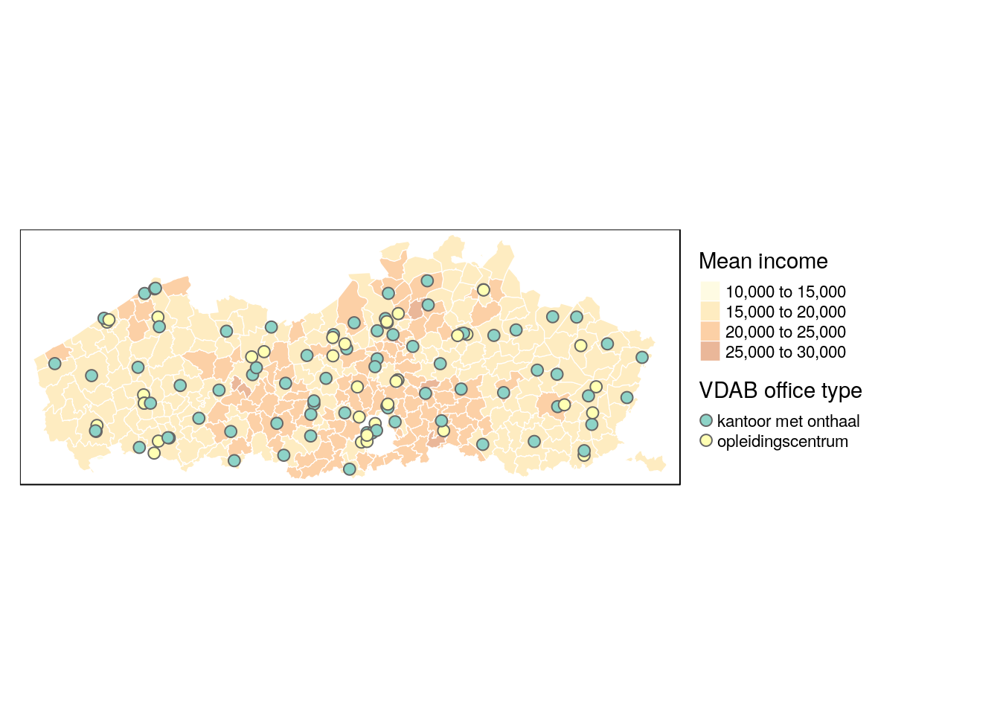

Questions and answers
How can I join Brussels to the rest of the provinces?
library(BelgiumMaps.StatBel)
library(sf)
library(dplyr)
library(tmap)
data("BE_ADMIN_PROVINCE")
data("BE_ADMIN_REGION")
prov <- st_as_sf(BE_ADMIN_PROVINCE)
region <- st_as_sf(BE_ADMIN_REGION)The spatial data in the BelgiumMaps.StatBel-package on provincial level contains a hole for Brussels, as Brussels is a region not a province.
qtm(prov)We don’t want to spatially join the region of Brussels to the surrounding province of Vlaams-Brabant, but want an additional spatial feature in the set of provinces, representing Brussels.
As expected with the close alignment through the sf-package of data operations and spatial operations, this can be achieved by stacking the two datasets with the base R function rbind() (row bind).
prov <- prov %>%
# select and rename variables to have the name names for stacking
select(niscode = CD_PROV_REFNIS, label = TX_PROV_DESCR_NL)
prov # 10 records for 10 provinces## Simple feature collection with 10 features and 2 fields
## geometry type: MULTIPOLYGON
## dimension: XY
## bbox: xmin: 2.545427 ymin: 49.49697 xmax: 6.407937 ymax: 51.50512
## epsg (SRID): 4326
## proj4string: +proj=longlat +datum=WGS84 +no_defs
## niscode label geometry
## 10000 10000 Provincie Antwerpen MULTIPOLYGON (((4.936026 51...
## 20001 20001 Provincie Vlaams-Brabant MULTIPOLYGON (((5.107924 50...
## 20002 20002 Provincie Waals-Brabant MULTIPOLYGON (((4.14567 50....
## 30000 30000 Provincie West-Vlaanderen MULTIPOLYGON (((2.842289 50...
## 40000 40000 Provincie Oost-Vlaanderen MULTIPOLYGON (((3.491583 50...
## 50000 50000 Provincie Henegouwen MULTIPOLYGON (((2.911694 50...
## 60000 60000 Provincie Luik MULTIPOLYGON (((5.351656 50...
## 70000 70000 Provincie Limburg MULTIPOLYGON (((5.895892 50...
## 80000 80000 Provincie Luxemburg MULTIPOLYGON (((5.012458 49...
## 90000 90000 Provincie Namen MULTIPOLYGON (((4.514086 49...brussel <- region %>% filter(
# select region of Brussels
TX_RGN_DESCR_NL == 'Brussels Hoofdstedelijk Gewest') %>%
# select and rename variables to have the name names for stacking
select(niscode = CD_RGN_REFNIS, label = TX_RGN_DESCR_NL)
brussel # one record for Brussels## Simple feature collection with 1 feature and 2 fields
## geometry type: MULTIPOLYGON
## dimension: XY
## bbox: xmin: 4.244665 ymin: 50.76369 xmax: 4.482274 ymax: 50.91372
## epsg (SRID): 4326
## proj4string: +proj=longlat +datum=WGS84 +no_defs
## niscode label geometry
## 1 4000 Brussels Hoofdstedelijk Gewest MULTIPOLYGON (((4.297677 50...prov_bxl <- rbind(prov, brussel) # combine records
prov_bxl %>% print(n=11) # 11 records: 10 provinces + region of Brussels## Simple feature collection with 11 features and 2 fields
## geometry type: MULTIPOLYGON
## dimension: XY
## bbox: xmin: 2.545427 ymin: 49.49697 xmax: 6.407937 ymax: 51.50512
## epsg (SRID): 4326
## proj4string: +proj=longlat +datum=WGS84 +no_defs
## niscode label
## 10000 10000 Provincie Antwerpen
## 20001 20001 Provincie Vlaams-Brabant
## 20002 20002 Provincie Waals-Brabant
## 30000 30000 Provincie West-Vlaanderen
## 40000 40000 Provincie Oost-Vlaanderen
## 50000 50000 Provincie Henegouwen
## 60000 60000 Provincie Luik
## 70000 70000 Provincie Limburg
## 80000 80000 Provincie Luxemburg
## 90000 90000 Provincie Namen
## 1 4000 Brussels Hoofdstedelijk Gewest
## geometry
## 10000 MULTIPOLYGON (((4.936026 51...
## 20001 MULTIPOLYGON (((5.107924 50...
## 20002 MULTIPOLYGON (((4.14567 50....
## 30000 MULTIPOLYGON (((2.842289 50...
## 40000 MULTIPOLYGON (((3.491583 50...
## 50000 MULTIPOLYGON (((2.911694 50...
## 60000 MULTIPOLYGON (((5.351656 50...
## 70000 MULTIPOLYGON (((5.895892 50...
## 80000 MULTIPOLYGON (((5.012458 49...
## 90000 MULTIPOLYGON (((4.514086 49...
## 1 MULTIPOLYGON (((4.297677 50...qtm(prov_bxl)How can I join Brussels as an inset-map?
Outlying locations (e.g. Alaska on US-maps) or areas-of interested that you want to zoom in on, can also be displayed with an inset map on a main map. This is also handy for Brussels, especially if you want to show details. You can do this in tmap by defining viewports using the grid-package, and specifing the inset map and the viewport for the inset man, when saving the map with `tmap_save().
library(readr)
# load municipal boundaries
data("BE_ADMIN_MUNTY")
munip_map <- st_as_sf(BE_ADMIN_MUNTY)
# load fiscal income data on municipal level
munip_data <- read_csv(
file = 'data/fiscal_incomes_2016.csv',
col_types = cols(
munip_label = col_character(),
munip_nis = col_character(),
n_inhabitants = col_integer(),
income_mean = col_integer() ))
# add map and income data together on muncipal level
munip <- left_join(
munip_map, munip_data,
by = c('CD_MUNTY_REFNIS' = 'munip_nis'))# remove Brussels municipalities for the main map (empty hole)
munip_nobxl <- munip %>% filter(TX_RGN_DESCR_NL != 'Brussels Hoofdstedelijk Gewest')
# construct main map
mainmap <- qtm(munip_nobxl, fill = 'income_mean',
fill.title = 'Mean income',
# same manual breaks in main and inset map
fill.breaks = c(5000, 10000, 15000, 20000, 25000, 30000)) +
tm_legend(legend.outside = TRUE, legend.outside.position="right")
mainmap# select only Brussels municipalities for the inset map
munip_onlybxl <- munip %>% filter(TX_RGN_DESCR_NL == 'Brussels Hoofdstedelijk Gewest')
# construct inset map for Brussels
insetmap <- qtm(munip_onlybxl, fill = 'income_mean',
fill.breaks = c(5000, 10000, 15000, 20000, 25000, 30000)) +
tm_legend(show=FALSE) # no legend for the inset map
insetmaplibrary(grid)
# specify the location (viewport) for the inset map
viewport_bxl <- viewport(x = 0.2, y = 0.2, width = 0.3, height = 0.3)
# save map with the inset map and the viewport in addition to the main map
tmap_save(mainmap, filename = 'municipalities_income_inset_bxl.png',
width = 1600, height = 800,
insets_tm = insetmap, insets_vp = viewport_bxl)inset map
How do I format tmap legends with percentages?
You can specify detailed, custom functions to format the numbers displayed in the legend, using the legend.format parameter when using tm_fill(). The scales package contains some utility functions to format numbers, for percentages we can use percent_format() and specify the number of digits, the decimal mark, etc.
munip <- munip %>%
# Contrived: calculate mean income in municipalities as percentage of total in Belgium
mutate(income_pct = income_mean / sum(income_mean))library(scales)
tm_shape(munip) +
tm_fill(col = 'income_pct',
title = 'Percentage of income',
legend.format = percent_format(accuracy = .01) ) +
tm_borders(col = 'white', lwd = .5)# further customisation
tm_shape(munip) +
tm_fill(col = 'income_pct',
title = 'Percentage of income',
legend.format = list(
fun = percent_format(accuracy = .01, suffix = ' pct'), # 'pct' instead of '%'
text.separator = '-' )) + # dash instead of 'to' for separator
tm_borders(col = 'white', lwd = .5)
Can I add points to a thematic map?
Yes, in tmap that can be done using functions such as tm_symbols() (generic), or tm_squares(), tm_bubbles(), tm_dots(), or tm_makers().
You can do this with all records that have coordinates-data (latitude, longitude). As an example, we download the VDAB offices locations from their open data portal (other tutorial using this data with an interactive map example).
library(jsonlite) # used for converting the JSON data to a dataframe
# Fetch the location data from de VDAB open data portal
vdab.kantoren = fromJSON('http://opendata.vdab.be/vdab/locaties.json') %>%
mutate_at(vars(lat, lon), as.double) # coordinates need to be numeric, not a character# convert 'regular' dataframe to a sf-object
vdab.kantoren = st_as_sf(
vdab.kantoren,
coords = c("lon", "lat"), # specify the columns holding the coordinates data
crs = 4326, # specify the map projection to be the same as the map projection.
agr = "constant")Using tm_symbols(), we layer the office locations on a map that shows the mean income on muncipal level.
# Only offices in Flanders -> subselect map
vlaanderen <- munip %>% filter(TX_RGN_DESCR_NL == 'Vlaams Gewest')
map.vdab <- tm_shape(vlaanderen) +
tm_fill(col = 'income_mean', title = 'Mean income', alpha = 0.4) + # fill polygons with color
tm_borders(col = 'white', lwd = 0.6) + # white borders between municipalities
tm_shape(vdab.kantoren) + # add the spatial dataframle containing points
tm_symbols(col = 'typelocatie', title.col = 'VDAB office type', size = 0.3) + # add layer with symbols/points
tm_legend(legend.outside = TRUE, legend.outside.position="right") # position legend outside
map.vdab
How to add a logo to ggplot-based map?
In ggplot, adding a logo is more generic but less intuitive then using tm_logo() in the tmap-package. But you can use the generic function annotation_raster() to overlay an image on a plot and achieve the same effect.
library(ggplot2)
library(scales) # optional, for formatting number
m.muni.income <- ggplot(munip) +
geom_sf(aes(fill = income_mean), lwd = .1) + # lwd sets thin borders
scale_fill_gradient2( # use diverging color scale around median income,
labels = number_format(big.mark = '.'), # format numbers w/t thousands-point.
high = '#529FD3', low = '#FB9316', # HIVA-logo colors to define ends color range.
midpoint = median(munip$income_mean)) +
labs(title = 'Spatial income inequality in Belgium',
fill = "Mean income",
caption = 'Source: Statbel (fiscal year 2016)')
m.muni.incomelibrary(png)
hiva_logo <- readPNG('data/hiva_logo_400x400.png')
# add logo in plot, specify size through coordinates on x and y-axes.
m.muni.income <- m.muni.income +
annotation_raster(hiva_logo, ymin = 49.5 ,ymax= 49.8, xmin = 2.5,xmax = 3)
m.muni.income